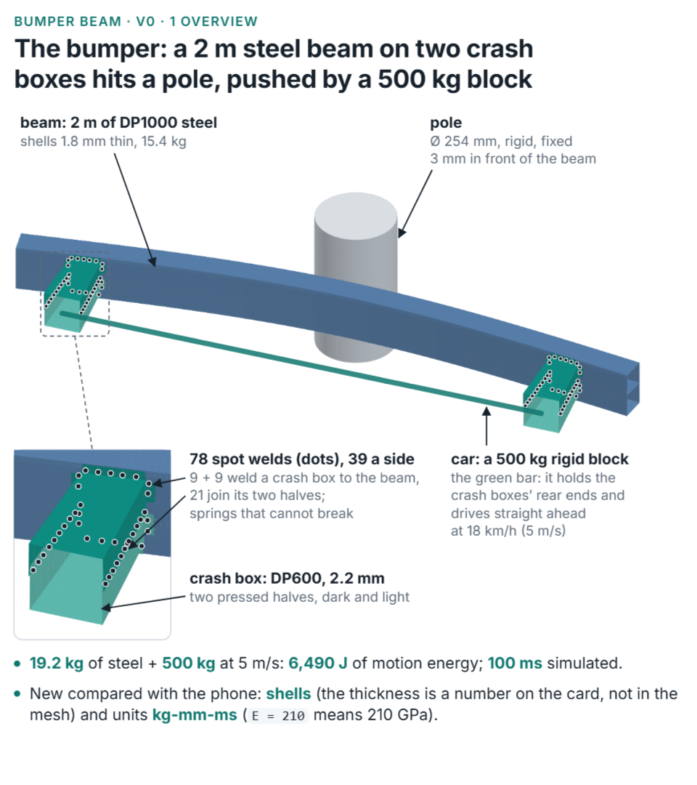
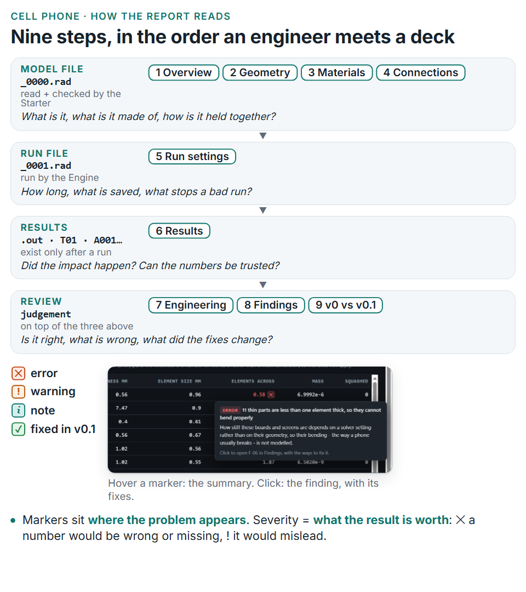

Reading a crash deck cold
OpenRadioss Viewer helps a mechanical engineer quickly explore, visualise and understand a crash-simulation file, like a phone dropped on the floor or a car bumper hitting a pole. It reads the model and run files, shows the parts in 3D, and flags the problems that would make the answer wrong: a run that stops mid-impact, parts tied to nothing, a steel that tears at the wrong limit. For each problem you pick a suggested quick fix or write your own note; an AI agent applies them, re-runs the solver and compares before and after.
Start here

24 slides · narrated · 49 minStart here: the talk
What the tool finds in both models, how the numbers are checked against the solver, what the fixes change, and the agent skill that repeats the workflow on a new deck. Press ▶ Play and it moves on by itself.
▶ Watch the talk
Then explore: the interactive report
Geometry, materials, connections, run settings, results, findings and the corrected v0.1 model, in one offline page.
Open the report ↗